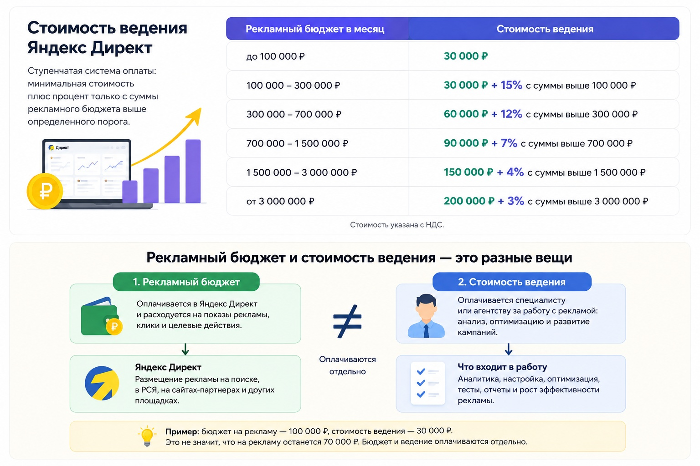

Блог о платном трафике
Ведение Яндекс Директ: цена в 2026 году и что входит в стоимость
Сколько стоит ведение Яндекс Директ в месяц, из чего складывается цена специалиста, что входит в работу и почему рекламный бюджет оплачивается отдельно.
Цена ведения Яндекс Директ обычно считается отдельно от рекламного бюджета. Вы платите Яндексу за клики, показы или целевые действия, а специалисту - за управление рекламой, аналитику, оптимизацию и развитие кампаний.
По открытым предложениям специалистов и агентств в 2026 году ведение начинается примерно от 15 000-20 000 ₽ в месяц. У агентств стартовая стоимость часто находится в районе 40 000 ₽ и выше. Конкретная цена зависит от рекламного бюджета, количества направлений, числа кампаний и сложности проекта.
У меня минимальная стоимость ведения Яндекс Директа - 30 000 ₽ в месяц. При увеличении рекламного бюджета цена постепенно растет, поскольку становится больше кампаний, данных, тестов и работы с оптимизацией.
Моя стоимость ведения Яндекс Директ
| Рекламный бюджет в месяц | Стоимость ведения |
|---|---|
| до 100 000 ₽ | 30 000 ₽ |
| 100 000-300 000 ₽ | 30 000 ₽ + 15% с суммы выше 100 000 ₽ |
| 300 000-700 000 ₽ | 60 000 ₽ + 12% с суммы выше 300 000 ₽ |
| 700 000-1 500 000 ₽ | 90 000 ₽ + 7% с суммы выше 700 000 ₽ |
| 1 500 000-3 000 000 ₽ | 150 000 ₽ + 4% с суммы выше 1 500 000 ₽ |
| от 3 000 000 ₽ | 200 000 ₽ + 3% с суммы выше 3 000 000 ₽ |

Я использую ступенчатую модель оплаты. На небольшом бюджете действует фиксированная стоимость, дальше добавляется процент только с суммы рекламного бюджета выше определенного порога.
Стоимость указана с НДС.
Такой расчет позволяет не привязывать цену к одному фиксированному проценту от всего рекламного бюджета. По мере роста расходов процентная часть снижается.
Рекламный бюджет в стоимость ведения не входит

Это две разные статьи расходов.
Рекламный бюджет перечисляется в Яндекс Директ и расходуется непосредственно на размещение рекламы.
Стоимость ведения получает специалист за работу с рекламными кампаниями.
Например, если рекламный бюджет составляет 100 000 ₽, а ведение стоит 30 000 ₽, это не означает, что на рекламу останется 70 000 ₽. Бизнес отдельно оплачивает бюджет Яндексу и отдельно работу специалиста.
Для российских рекламодателей в 2026 году услуги Яндекс Директа облагаются НДС 22%. В интерфейсе Директа статистику расходов можно смотреть как с НДС, так и без него.
Подробнее о том, как формируется цена перехода, - в статье о цене за клик в Яндекс Директе.
Что входит в цену ведения Яндекс Директ
После запуска кампании нельзя просто оставить ее работать без контроля. Накапливаются новые данные, меняется структура трафика, появляются неэффективные запросы и площадки, алгоритмы получают статистику по конверсиям.
В мою работу входит:
- анализ расходов, заявок и стоимости привлечения;
- контроль поисковых запросов;
- работа с минус-фразами;
- анализ площадок РСЯ и блокировка некачественного трафика;
- оптимизация кампаний под цели в Яндекс Метрике;
- работа со стратегиями и бюджетами;
- корректировка объявлений и креативов;
- тестирование новых аудиторий, офферов и рекламных связок;
- контроль распределения бюджета между кампаниями;
- анализ конверсии посадочных страниц;
- поиск причин роста стоимости заявки;
- масштабирование работающих связок;
- отчетность по результатам и внесенным изменениям.
Я смотрю в первую очередь не на количество кликов и CTR, а на то, что происходит после перехода на сайт: сколько получено заявок, какого они качества и сколько стоит целевое обращение.
От чего зависит стоимость ведения
Два проекта с одинаковым рекламным бюджетом могут требовать совершенно разного объема работы.
Количество рекламируемых направлений
Продвигать одну услугу в одном городе проще, чем десятки категорий товаров или несколько независимых направлений бизнеса.
Чем больше сегментов, тем больше данных приходится анализировать отдельно и тем больше рекламных гипотез нужно проверять.
Размер рекламного бюджета
При росте бюджета возрастает цена ошибки. Если кампания расходует несколько миллионов рублей в месяц, даже небольшое ухудшение стоимости конверсии может дать существенную разницу в итоговых расходах.
Большие проекты также обычно содержат больше кампаний, сегментов, регионов и источников данных.
Сложность аналитики
Для одного бизнеса достаточно корректно настроенных целей Яндекс Метрики. Для другого нужно учитывать звонки, CRM, электронную коммерцию, офлайн-конверсии или несколько этапов воронки.
Чем больше данных необходимо связать с рекламой, тем больше работы требуется для нормальной оптимизации.
Состояние текущей рекламы
Если кампании уже нормально структурированы и накопили качественную статистику, их можно развивать дальше.
Если в аккаунте десятки старых кампаний без понятной структуры, некорректные цели и смешанная статистика, сначала требуется аудит и переработка существующей системы.
Фиксированная цена или процент от бюджета
На рынке встречаются три основных варианта оплаты:
1. Фиксированная сумма в месяц.
2. Процент от рекламного бюджета.
3. Фиксированная база плюс процент при росте бюджета.
Фикс удобен для небольших проектов с понятным объемом работы. Процент позволяет цене автоматически расти вместе с масштабом рекламы, но постоянный процент от всего бюджета становится слишком дорогим на крупных проектах.
Поэтому я использую ступенчатую систему: есть минимальная стоимость работы, а по мере увеличения бюджета процент снижается.
Почему ведение за 5 000 ₽ может оказаться дорогим
Низкая цена сама по себе ничего не говорит о качестве специалиста. Вопрос в том, какой объем работы входит в эту сумму.
Если подрядчик раз в месяц открывает кабинет, смотрит общий расход и отправляет стандартный отчет, технически это тоже можно назвать ведением. Но такой формат мало влияет на результат рекламы.
Перед началом работы полезнее уточнить:
- как часто анализируются кампании;
- проверяются ли поисковые запросы и площадки;
- работает ли специалист с целями и конверсиями;
- кто будет фактически вести проект;
- создаются ли новые рекламные гипотезы;
- что содержится в отчетности;
- анализируется ли качество заявок.
Цена имеет смысл только вместе с пониманием состава услуги.
Сколько закладывать на Яндекс Директ вместе с ведением
Сначала нужно определить рекламный бюджет, достаточный для получения статистики именно в вашей нише. Универсальной суммы здесь нет.
В Яндекс Директе стоимость клика определяется аукционом и не является фиксированной. Сам Яндекс позволяет начать с небольшого технического бюджета, но это не означает, что такой суммы хватит для полноценного тестирования конкретного бизнеса.
Для предварительной оценки расходов можно использовать прогноз и данные по собственной нише, после чего отдельно добавить стоимость работы специалиста.
Когда постоянное ведение действительно нужно
Разовая настройка может быть достаточной, если внутри компании есть человек, который дальше самостоятельно анализирует кампании и занимается их оптимизацией.
Если такого специалиста нет, рекламу лучше вести постоянно. Особенно это касается проектов, где:
- бюджет заметно влияет на экономику бизнеса;
- работает несколько рекламных кампаний;
- используются автоматические стратегии;
- нужно контролировать стоимость заявки;
- регулярно меняются товары, услуги или предложения;
- есть возможность масштабировать успешные направления.
Автоматические стратегии Яндекс Директа сами управляют показами и ставками, но им все равно нужно правильно передавать цели, задавать ограничения и контролировать результат. Яндекс прямо указывает, что для оптимизации стратегии требуется достаточное количество конверсий и соответствующий недельный бюджет.
Как оценивать работу специалиста
Самая низкая стоимость клика не должна быть основной целью ведения.
Дешевый трафик может давать мало заявок, а более дорогие переходы иногда оказываются значительно качественнее. Поэтому я оцениваю рекламу по цепочке от расхода до целевого действия.
Для бизнеса обычно важнее:
- количество целевых обращений;
- стоимость заявки;
- качество заявок;
- количество продаж;
- стоимость привлечения клиента;
- выручка и окупаемость, если эти данные доступны.
О том, как управлять стоимостью перехода, читайте в статье о цене за клик в Яндекс Директе.
Что в итоге
Цена ведения Яндекс Директ состоит не из количества созданных объявлений и не из времени, проведенного в рекламном кабинете. Вы платите за регулярный контроль рекламы, анализ данных, оптимизацию и поиск способов получать больше результата из рекламного бюджета.
Моя стоимость ведения начинается от 30 000 ₽ в месяц. При бюджетах выше 100 000 ₽ применяется ступенчатая система расчета, при которой процент постепенно уменьшается с ростом расходов.
Рекламный бюджет всегда оплачивается отдельно. Поэтому при расчете затрат на Яндекс Директ нужно заранее учитывать две суммы: бюджет на размещение и стоимость работы специалиста.